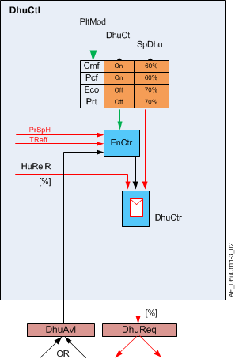

除湿控制、最大偏差制热（DhuCtl12）
Overview
应用功能》Dehumidification control 12, maximum of deviation heating for dehumidify" (DhuCtl12）通过覆盖用于冷却的加热/cooling盘管阀位置以及将风扇设置为用于除湿的正确速度来降低热泵应用中的房间相对湿度。
Function
PID 控制器将房间相对湿度与对应于活动设备模式的设定值进行比较。 PID-控制模式设置为 2-Pos（关闭/Dehumidify）以启用最大功率以快速降低除湿温度。
此外，还监控室温。如果室温低于当前加热设定值减去可配置的差值（除湿加热最大偏差，HDvnMaxDhu），则除湿控制将被禁用。

该表显示了每个工厂模式的除湿设定值和参数的默认值。除湿在舒适和预舒适期间启用，在经济和保护期间禁用。 （参见配置）
植物模式 | DhuCtl | 除响声设定值。 [%] |
|---|---|---|
离开 | 离开 | - |
保护 | 离开 | 70 |
经济 | 离开 | 70 |
预舒适 | On | 60 |
舒适 | On | 60 |
对于其他工厂模式，除湿值要么是预定义的，要么取决于配置设置。

DhuAvl：表示热泵制热/cooling盘管可用于除湿的信号
DhuReq：覆盖热泵加热/cooling线圈的信号
Configuration
 Objects
Objects
描述 | 目的 | 类型 | 默认值 |
|---|---|---|---|
Relative room humidity setpoint for comfort | SpHuRelRCmf | ACnfVal | 60 [% 相对湿度] |
Relative room humidity setpoint for pre-comfort | SpHuRelRPcf | ACnfVal | 60 [% 相对湿度] |
Relative room humidity setpoint for economy | SpHuRelREco | ACnfVal | 70 [% 相对湿度] |
Relative room humidity setpoint for protection | SpHuRelRPrt | ACnfVal | 70 [% 相对湿度] |
 Parameters
Parameters
描述 | 范围 | 默认值 |
|---|---|---|
Comfort configuration 0:Off | CmfCnf | 1:Dehumidify |
Pre-Comfort configuration 枚举见CmfCnf | PcfCnf | 1:Dehumidify |
Economy configuration 枚举见CmfCnf | EcoCnf | 0:Off |
Protection configuration 枚举见CmfCnf | PrtCnf | 0:Off |
Maximum deviation heating for dehumidification | HDvnMaxDhu | 3 [K] |
Hysteresis for max.deviation heating for dehumidification | HysHDvnMaxDhu | 1 [K] |
Temperature difference unit | TDiffUnit | [K] |
Interface
界面 | 描述 | 类型 | 参考号 | 拥有者 |
|---|---|---|---|---|
PrSpDhu | Present dehumidification setpoint | APrcVal | ● | - |
DhuCtr | Dehumidification controller | 控制器 | ● | - |
RCtl | Room control | GrpMaster | ◉ | 房间 |
SpHuRelRCmf | Relative room humidity setpoint for comfort | ACnfVal | ● | - |
SpHuRelRPcf | Relative room humidity setpoint for pre-comfort | ACnfVal | ● | - |
SpHuRelREco | Relative room humidity setpoint for economy | ACnfVal | ● | - |
SpHuRelRPrt | Relative room humidity setpoint for protection | ACnfVal | ● | - |
Engineering and commissioning
没有任何